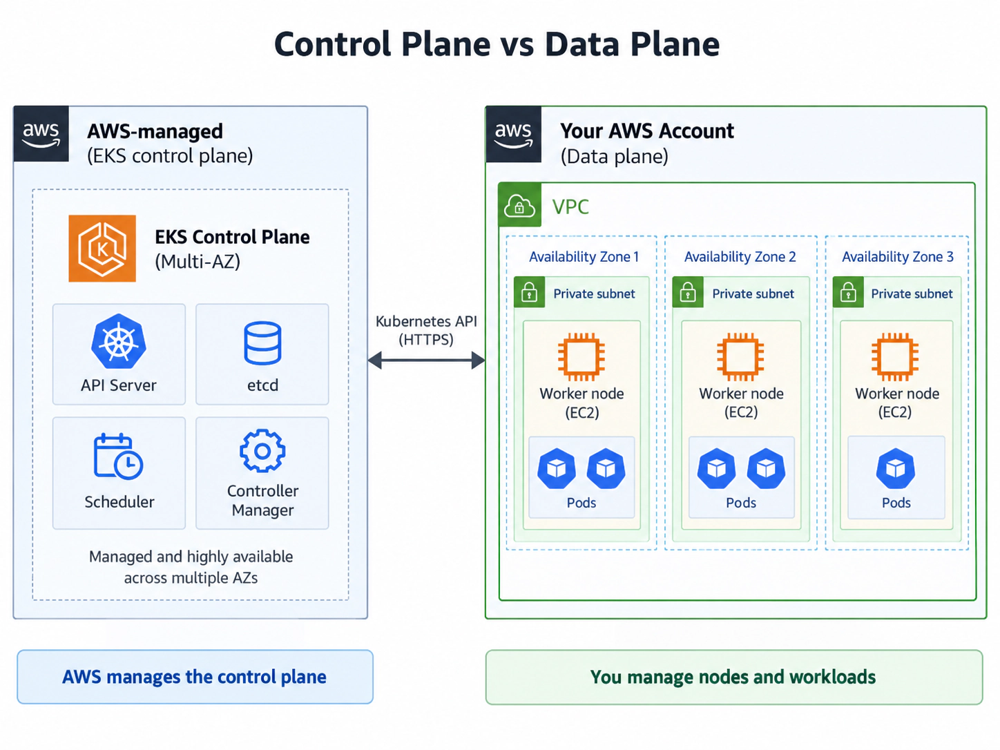
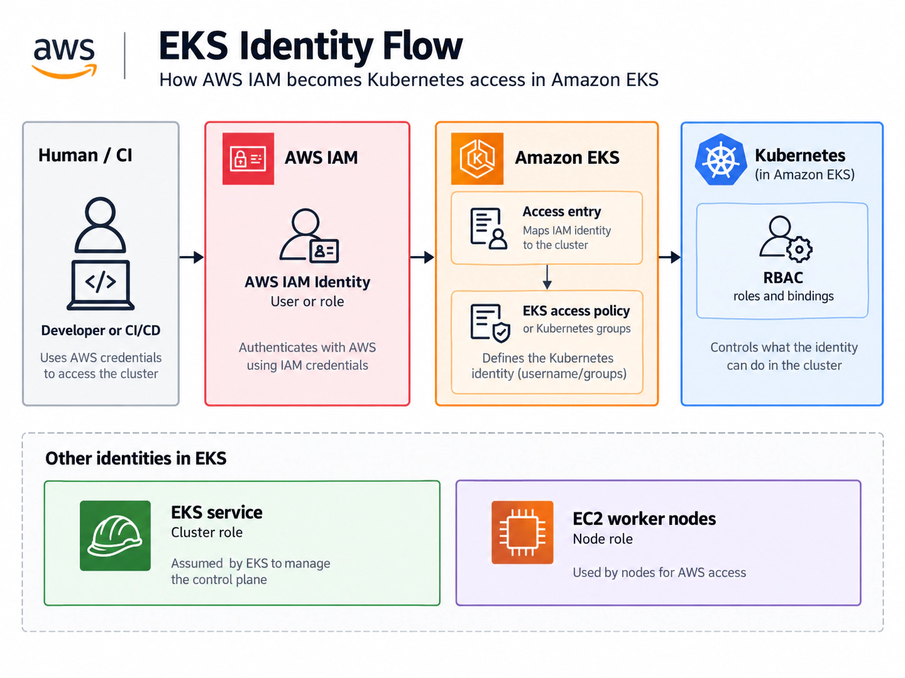
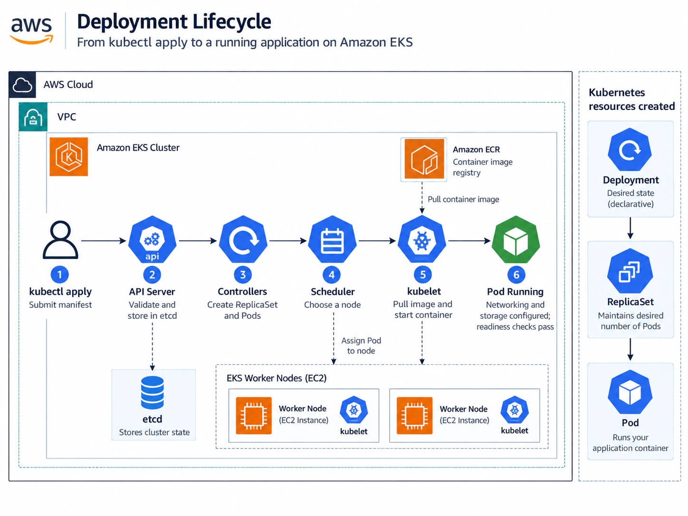

Amazon EKS removes much of the work involved in running Kubernetes yourself. AWS operates the Kubernetes control plane, handles its availability and exposes an API endpoint that tools such as kubectl can communicate with. That does not mean AWS manages the entire cluster for you.
Your worker nodes still need somewhere to run, those nodes need to reach the control plane, IAM identities need to be mapped into Kubernetes access, and workloads depend on networking, DNS and storage components before they are genuinely usable. A cluster can therefore show as ACTIVE in AWS while still being incapable of running an application.
This article breaks EKS down into those layers and then follows a workload through the cluster. The focus is a traditional EC2-backed EKS architecture using managed node groups, rather than EKS Auto Mode or Fargate.
Control Plane
A Kubernetes cluster is split broadly into two sides: the control plane, which makes decisions about the cluster, and the data plane, where application workloads actually run.
With Amazon EKS, AWS operates the control plane for you inside AWS-managed infrastructure. You do not see the underlying instances, manage etcd, patch API servers or build your own highly available control plane. AWS runs multiple API server instances and distributes the control-plane components across Availability Zones so that the cluster is not dependent on one machine or one AZ.
The component you interact with most directly is the Kubernetes API server. Almost everything you do with Kubernetes eventually reaches this API.
kubectl get pods
kubectl apply -f deployment.yamlThe server authenticates the request, checks whether the identity is allowed to perform the action, validates it and makes the requested state available to the rest of the control plane.
aws eks describe-cluster \
--name my-cluster \
--query 'cluster.endpoint' \
--output textBehind the API server sits etcd, Kubernetes' distributed key-value store. The scheduler decides which worker node should run each new Pod, while the controller manager continuously reconciles declared state with actual state.
Desired replicas: 3
Running replicas: 2
↓ reconciliation
Desired replicas: 3
Running replicas: 3That distinction between declaring what you want and Kubernetes continuously working towards it is one of the most important ideas behind the platform.

Networking
The control plane and worker nodes belong to the same Kubernetes cluster, but they do not necessarily live in the same network. The EKS control plane runs inside an AWS-managed VPC. Your EC2 worker nodes, load balancers and most application infrastructure sit inside your own VPC.
When creating an EKS cluster, you provide AWS with subnet IDs. EKS creates cross-account Elastic Network Interfaces in selected subnets in your VPC, giving the control plane a path to resources in your network.
The opposite direction matters as well. The kubelet on each worker node connects to the Kubernetes API endpoint over HTTPS so the node can register, receive workload assignments and report health. Control-plane operations such as kubectl exec, kubectl logs and kubectl port-forward also depend on connectivity back to the kubelet API.
aws eks describe-cluster \
--name my-cluster \
--query 'cluster.resourcesVpcConfig.{
Public:endpointPublicAccess,
Private:endpointPrivateAccess,
PublicCIDRs:publicAccessCidrs
}'kubelet → API
control plane → kubelet
This distinction matters operationally: an EC2 instance can be healthy from AWS's perspective while Kubernetes still cannot communicate with it correctly.
Worker Nodes
The control plane decides what should happen, but application containers still need machines on which to run. In an EC2-backed EKS cluster, those machines are the worker nodes.
A worker node is a normal EC2 instance configured to participate in the Kubernetes cluster. It runs a container runtime, the kubelet, networking components and eventually your Pods. Kubernetes calls this side of the architecture the data plane.
kubectl get nodesNAME STATUS ROLES AGE VERSION
ip-10-0-11-25.eu-west-2 Ready <none> 4h v1.x
ip-10-0-31-48.eu-west-2 Ready <none> 4h v1.xReady matters more than simply seeing an EC2 instance in the AWS console. It tells us Kubernetes has accepted the node and considers it healthy enough to receive workloads.
Managed node groups
EKS managed node groups handle much of the EC2 worker lifecycle for you. They use EC2 Auto Scaling groups inside your account while EKS coordinates joining nodes to the cluster, managed upgrades and draining.
aws eks list-nodegroups \
--cluster-name my-clusterThe CoderCo architecture uses a deliberately small managed node group as bootstrap capacity before Karpenter handles additional workload nodes. This breaks the dependency loop where Karpenter itself needs Kubernetes compute before it can provision more compute.
Managed Node Group
↓
System Pods start
↓
Karpenter starts
↓
Unscheduled workloads appear
↓
Karpenter provisions capacityIAM & RBAC
EKS access becomes much easier to understand once AWS IAM and Kubernetes authorisation are treated as separate systems. AWS establishes who or what is making the request; Kubernetes then decides what that identity is allowed to do inside the cluster.
The cluster role is assumed by the EKS service itself. The node role belongs to EC2 worker nodes. A separate human or automation identity is used when someone runs kubectl.
aws sts get-caller-identity
aws eks update-kubeconfig \
--region eu-west-2 \
--name my-cluster
aws eks list-access-entries \
--cluster-name my-clusterModern EKS clusters can use access entries to map an IAM principal into cluster access. EKS access policies can provide predefined permissions, or the identity can be associated with Kubernetes groups and authorised through native Kubernetes RBAC.
IAM establishes the AWS identity. EKS maps that identity into cluster access. Kubernetes authorisation determines what that identity can actually do.

Cluster Add-ons
A healthy control plane and a set of Ready worker nodes still do not provide everything an application needs. Pods require networking, services need DNS and routing, and stateful workloads may need persistent storage.
Three components are fundamental to a normal EC2-backed EKS cluster: Amazon VPC CNI, CoreDNS and kube-proxy. The EBS CSI driver becomes important when workloads require persistent Amazon EBS storage.
aws eks list-addons \
--cluster-name my-cluster
kubectl get pods -n kube-systemVPC CNI
The Amazon VPC CNI handles Pod networking and can assign Pods addresses from the VPC address space. This makes subnet capacity an application-scaling concern as well as a networking concern.
CoreDNS
CoreDNS provides cluster DNS and service discovery, allowing workloads to use stable service names instead of depending on temporary Pod IPs.
kube-proxy
A Kubernetes Service provides a stable network abstraction in front of replaceable Pods. kube-proxy programs the node networking required to send Service traffic to appropriate backends.
EBS CSI
The EBS CSI driver connects Kubernetes storage requests with Amazon EBS. When a workload uses a PersistentVolumeClaim, the driver can provision and attach the required block volume.

From kubectl to Pod
The easiest way to connect everything is to follow a deployment through the cluster.
apiVersion: apps/v1
kind: Deployment
metadata:
name: web
spec:
replicas: 2
selector:
matchLabels:
app: web
template:
metadata:
labels:
app: web
spec:
containers:
- name: web
image: nginx:latest
ports:
- containerPort: 80kubectl apply -f deployment.yamlkubectl reads the kubeconfig, contacts the EKS API endpoint and authenticates using the configured AWS identity. The API server records the Deployment as desired state. Controllers create the ReplicaSet and Pod objects, the scheduler chooses nodes, and the kubelet on each selected node asks the container runtime to start the container.
If the image cannot be downloaded, the process can stop at ImagePullBackOff. If image retrieval succeeds, the CNI still needs to allocate networking before the Pod can become usable.
kubectl get pods -o wide -w
NAME READY STATUS IP
web-abc 0/1 ContainerCreating <none>
NAME READY STATUS IP
web-abc 1/1 Running 10.0.22.47What looked like one command has passed through several systems:
kubectl
↓
AWS identity
↓
EKS API
↓
Controllers
↓
Scheduler
↓
Worker Node
↓
kubelet
↓
Container Runtime
↓
VPC CNI
↓
Running Pod
kubectl apply declares desired state; multiple Kubernetes components turn that declaration into a running Pod.Pitfalls
Once the architecture is understood, many EKS problems stop looking like random Kubernetes errors. They normally point towards a particular layer.
ACTIVEdoes not mean application-ready. The control plane may exist while nodes, networking or system add-ons are unhealthy.- EC2 health is not Kubernetes node health. An instance can be running in AWS while its kubelet has failed to register.
- Public API access should be restricted. Authentication protects the endpoint, but known CIDR ranges reduce unnecessary exposure.
- AWS permission is not automatically Kubernetes permission. IAM identity, EKS access mapping and Kubernetes authorisation all have separate jobs.
- Subnet capacity matters. VPC CNI networking can exhaust available addresses before CPU or memory is exhausted.
- Deployment order matters. CoreDNS, storage controllers and Karpenter all need usable compute and explicit dependencies.
Control plane
↓
Networking
↓
Worker node
↓
Identity
↓
Cluster add-ons
↓
WorkloadA Pod that does not start is not automatically an “EKS problem”. It might be IAM, an exhausted subnet, scheduling, an image pull failure, DNS or the application itself. Understanding the architecture gives you somewhere sensible to begin.
Conclusion
EKS manages one of the hardest parts of Kubernetes for you: operating a highly available control plane. The rest of the cluster still depends on several systems crossing the boundary between AWS and Kubernetes.
The control plane needs a network path into your VPC. Worker nodes need to authenticate and register. IAM identities need to become Kubernetes permissions. Pods need IP addresses, Services need networking and DNS, and stateful workloads may need storage before an application becomes genuinely usable.
Once those responsibilities are separated, the cluster becomes much less of a black box. Instead of seeing an EKS cluster as one large AWS service, you can follow how its individual components depend on one another and narrow problems down to the layer where they actually occur.
That is the main difference between simply deploying something to EKS and understanding how EKS is working underneath it.